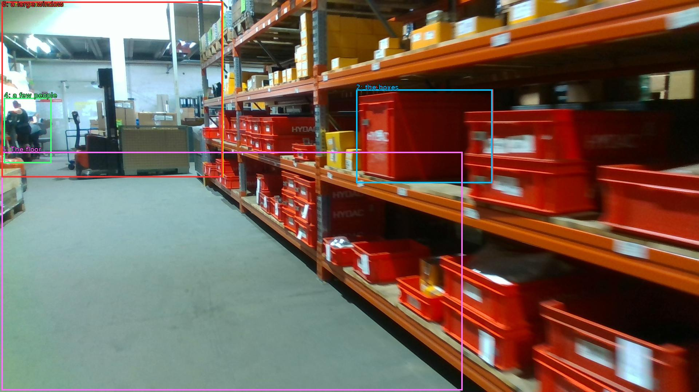

The image shows a long row of orange metal shelves in a warehouse. The shelves are filled with red plastic bins and boxes of various sizes and colors. The bins are arranged in a neat and orderly manner, and the boxes are neatly stacked on top of each other. The warehouse appears to be well-stocked with various items, and there are a few people visible in the background. The floor is made of concrete and there is a large window on the left side of the image, allowing natural light to enter the space.

Original · Caption raw · Grounding raw · Koordinate
Številke so lokalni ID regije. Dolge slikovne oznake so skrajšane; spodaj so celotne fraze. Napovedane regije se lahko prekrivajo ali opisujejo skupine.
| ID | Celotna fraza | bbox xyxy |
|---|---|---|
| 1 | The bins | [978.239990234375, 246.78001403808594, 1354.5599365234375, 504.9000244140625] |
| 2 | the boxes | [978.239990234375, 246.78001403808594, 1352.6400146484375, 504.9000244140625] |
| 3 | The warehouse | [4.799999713897705, 4.860000133514404, 613.4400024414062, 488.70001220703125] |
| 4 | a few people | [10.559999465942383, 269.46002197265625, 141.1199951171875, 449.82000732421875] |
| 5 | The floor | [4.799999713897705, 418.5000305175781, 1270.0799560546875, 1075.1400146484375] |
| 6 | a large window | [4.799999713897705, 4.860000133514404, 611.5199584960938, 488.70001220703125] |